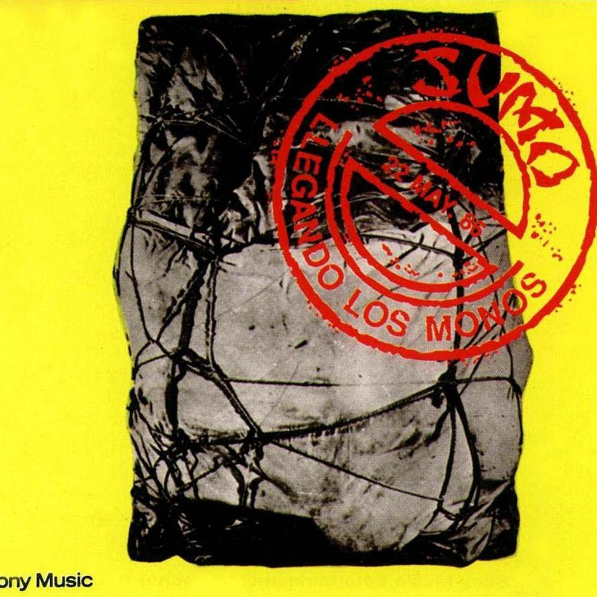
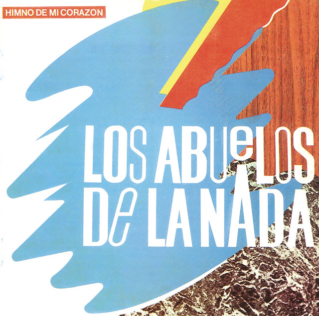

RETROSÍNTESIS 80s
⚡️ El pulso eléctrico de una generación
📼 Canciones de una época que no fue moda, fue identidad
@retrosintesis80s
CHARLY GARCÍA - CLICS MODERNOS

SUMO - LLEGANDO LOS MONOS

LOS ABUELOS - HIMNO DE MI CORAZÓN
SPINETTA JADE - BAJO BELGRANO
Instagram
TikTok